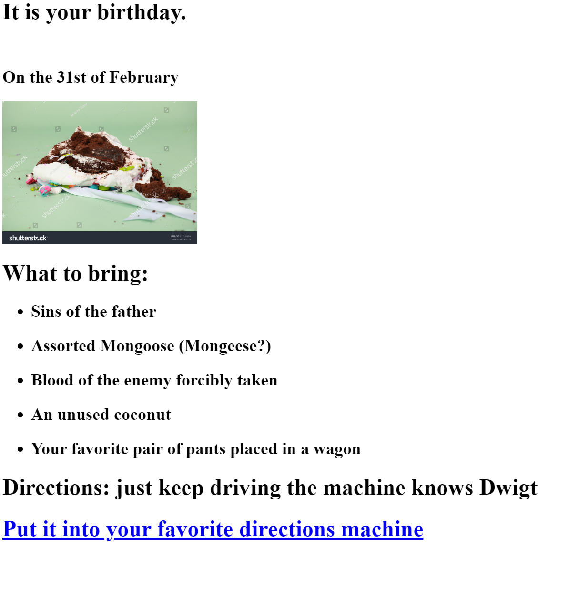
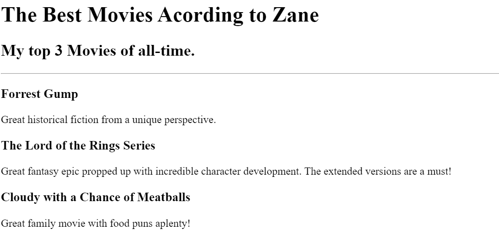

Zane Williams Portfolio
Found my calling as a Web Developer when I figured out I didn't like farming worms
Fall to your knees in awe of my sick ass projects
Evite's got nothing on this shizzit
Don't act glad you aren't invited!

Prepare your eyeballs for explosion at this God-tier movie list

Learn More
Send me a Message